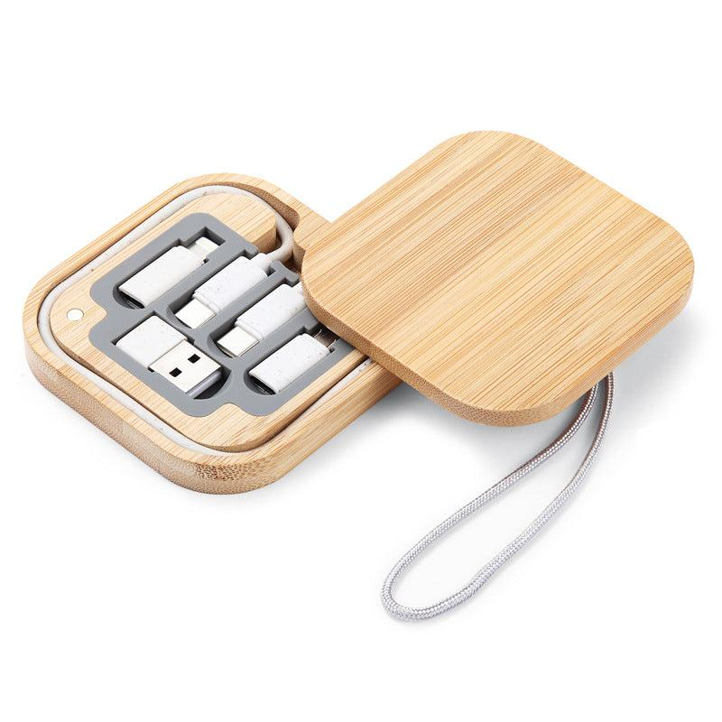

Where Nature Meets Innovation.
BAMBYTE started with a simple question: why does almost every electronic product we own look and feel the same?


BAMBYTE was conceptualised around the idea that natural materials have a place in modern electronic product design.
A different side of technology.
Our phones, speakers and chargers sit with us all day, in bedrooms, on desks, beside the sofa. Yet most are made of the same glossy plastic and cold metal. Our homes use timber, linen, rattan and clay. Our devices mostly don't.
Bamboo stood out. In Malaysia and across Southeast Asia it is part of everyday life, used in buildings, furniture and household objects for generations. We wanted to take that familiar material and give it a contemporary, technology-led expression, nothing like a handicraft souvenir.
Respecting what the material can and can't do.
Designing with a natural material means designing with its behaviour. Bamboo is fibrous and strong along its length, and it responds to moisture by swelling and shrinking slightly. A good product has to account for that from the start.
That's why BAMBYTE uses bamboo as the exterior, never as a substitute for electronic components. Drivers, batteries and circuitry stay inside a protective internal structure. Treatment, conditioning and surface finishing help the bamboo stay stable and durable around them. The aesthetics come from nature. The performance comes from engineering.
A grass that grows back.
Bamboo is a grass. Many species grow quickly and regenerate from their underground root systems after the culms are harvested, so a stand can be harvested again without replanting. That gives bamboo real potential as a renewable material for consumer products.
Potential is the important word. Whether a bamboo product is a better choice depends on how the bamboo is grown, harvested, processed and finished, and on everything else that goes into the product. We cover that in detail on our Material & Sustainability page.
Knowing where it comes from.
A natural material is only as good as its source. BAMBYTE aims to work with suppliers who can show where their bamboo is harvested and how it is managed and processed, and to prefer independently verified sources where they are available.
We don't hold any environmental certification today, and we won't claim one until it has been earned and verified.
Electronics that feel at home.
We imagine a future where you can choose the material your technology is made of, as you already do with furniture and clothing. BAMBYTE One is the first step. A family of bamboo charging, power and connectivity products is in development, each built on the same principle: Nature Meets Technology.
Our brand in four words.
Innovative
We bring a natural material into a category built on synthetics.
Minimalist
Simple forms that let the grain do the talking.
Authentic
Real bamboo, real variation, and honest claims.
Conscious
We think about the whole lifecycle, not just the surface.